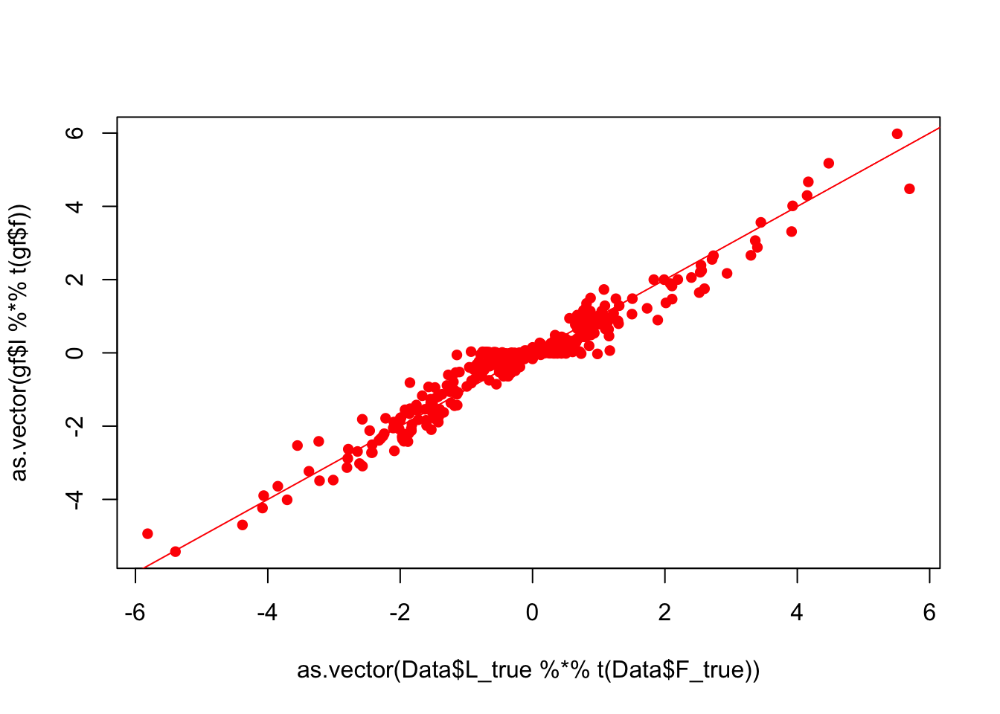
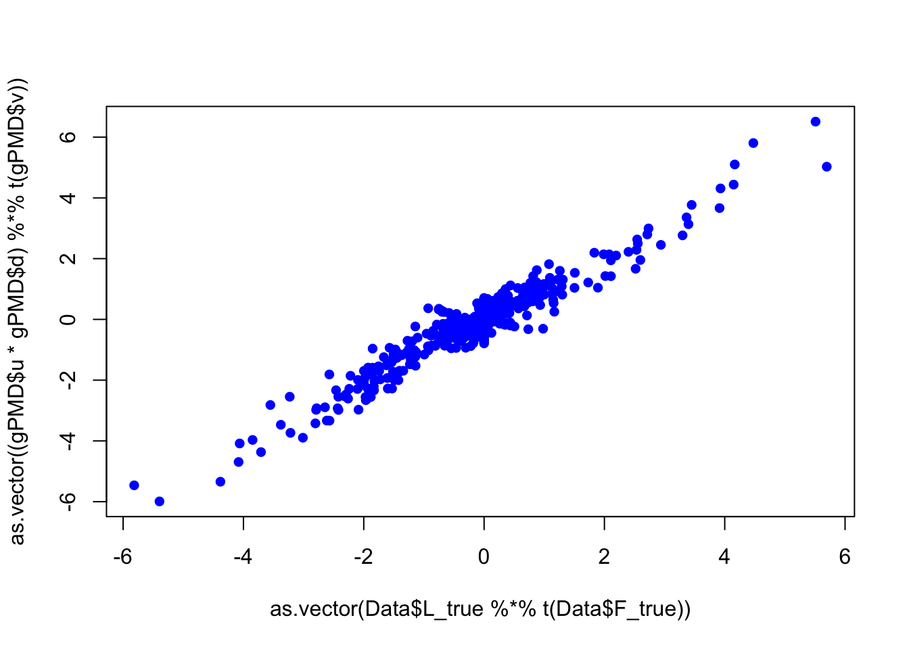
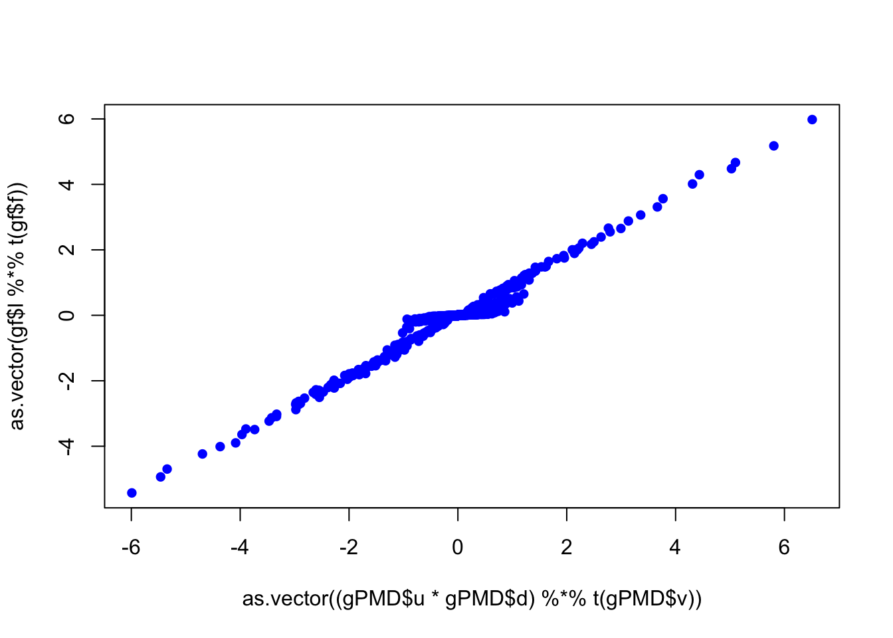

simulation for rankone case
Wei Wang
2017-03-13
Last updated: 2017-03-31
Code version: d05aaa3
simulation rank one
simulated data
big signal
set.seed(99)
Data = datamaker(60,100,c(0.5,0.1,0.2,0.15,0.05),c(0.01,0.5,1,2,5),0.5,c(0.6,0.05,0.3,0.025,0.025),c(0.01,0.5,1,2,5),0.5,sqrt(1))
dim(Data$Y)[1] 60 100gf = flashr::flash(Data$Y)
plot(as.vector(Data$L_true %*% t(Data$F_true)),as.vector(gf$l %*% t(gf$f)),pch = 16,col = "red")
abline(0,1,col = "red")
PMDlog = capture.output({gPMD = invisible( PMA.wrapper(Data$Y)) })Loading required package: plyrLoading required package: imputeplot(as.vector(Data$L_true %*% t(Data$F_true)),as.vector(gf$l %*% t(gf$f)),pch = 16,col = "red")
abline(0,1,col = "red")
plot(as.vector(Data$L_true %*% t(Data$F_true)),as.vector( (gPMD$u * gPMD$d) %*% t(gPMD$v) ),pch = 16,col = "blue")
sqrt(mean((gf$l %*% t(gf$f) - Data$L_true %*% t(Data$F_true))^2))/sqrt(mean((Data$L_true %*% t(Data$F_true))^2))[1] 0.2542683sqrt(mean(((gPMD$u * gPMD$d) %*% t(gPMD$v) - Data$L_true %*% t(Data$F_true))^2))/sqrt(mean((Data$L_true %*% t(Data$F_true))^2))[1] 0.353972plot(as.vector( (gPMD$u * gPMD$d) %*% t(gPMD$v) ),as.vector(gf$l %*% t(gf$f)),pch = 16,col = "blue")
different scale of sparsity
sparse
dense
intermidete sparse
Session Information
sessionInfo()R version 3.3.0 (2016-05-03)
Platform: x86_64-apple-darwin13.4.0 (64-bit)
Running under: OS X 10.12.3 (unknown)
locale:
[1] en_US.UTF-8/en_US.UTF-8/en_US.UTF-8/C/en_US.UTF-8/en_US.UTF-8
attached base packages:
[1] stats graphics grDevices utils datasets methods base
other attached packages:
[1] PMA_1.0.9 impute_1.42.0 plyr_1.8.4 MASS_7.3-45
[5] workflowr_0.4.0 rmarkdown_1.3
loaded via a namespace (and not attached):
[1] Rcpp_0.12.9 magrittr_1.5 knitr_1.15.1
[4] REBayes_0.73 munsell_0.4.3 doParallel_1.0.10
[7] pscl_1.4.9 SQUAREM_2016.8-2 colorspace_1.3-2
[10] lattice_0.20-34 foreach_1.4.3 stringr_1.2.0
[13] ashr_2.1-7 flashr_0.1.1 tools_3.3.0
[16] parallel_3.3.0 grid_3.3.0 gtable_0.2.0
[19] irlba_2.1.2 git2r_0.18.0 htmltools_0.3.5
[22] iterators_1.0.8 yaml_2.1.14 rprojroot_1.2
[25] digest_0.6.12 lazyeval_0.2.0 assertthat_0.1
[28] tibble_1.2 Matrix_1.2-8 ggplot2_2.2.1
[31] codetools_0.2-15 evaluate_0.10 stringi_1.1.2
[34] Rmosek_7.1.2 backports_1.0.5 scales_0.4.1
[37] truncnorm_1.0-7 This R Markdown site was created with workflowr